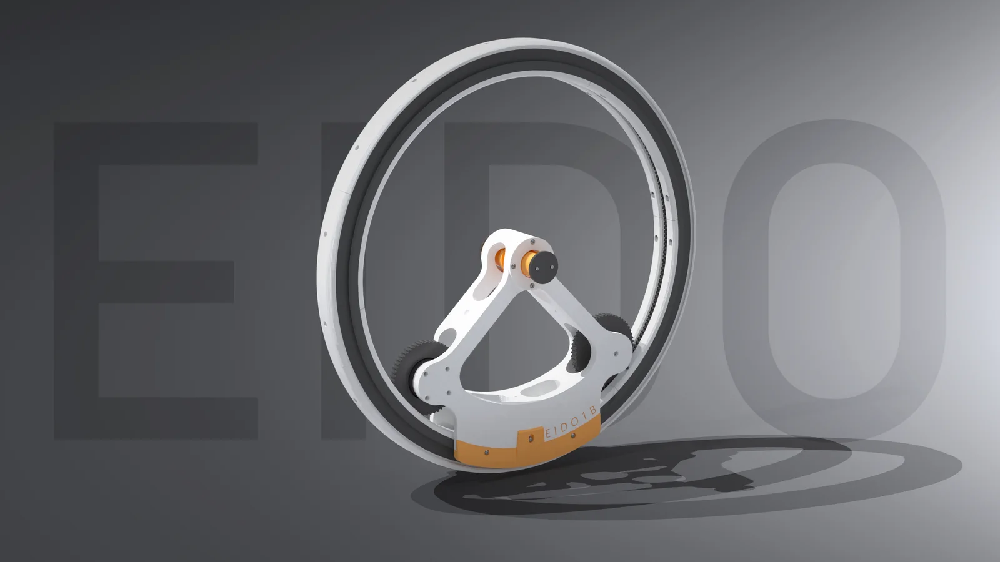
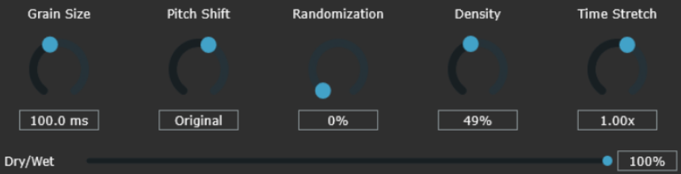
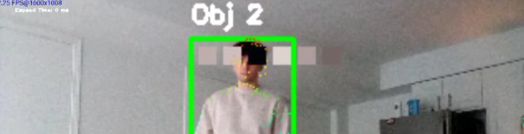
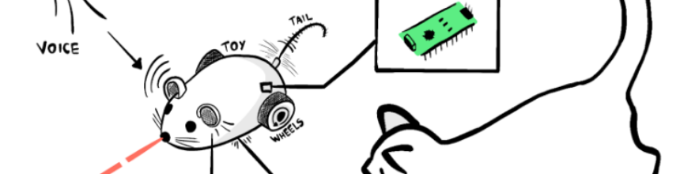
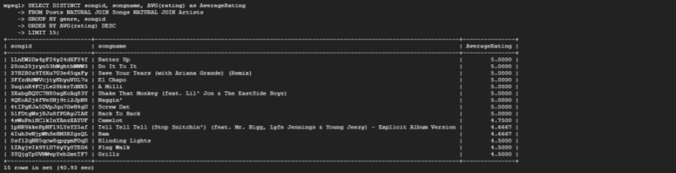
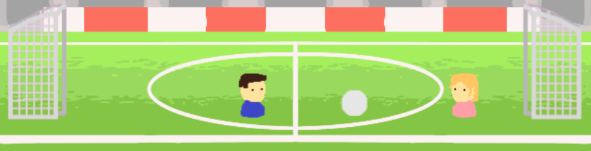
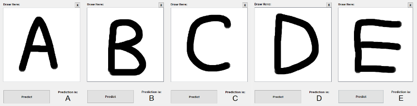

Portfolio
Paul Jablonski
About Me

Engineer.
Builder.
Design enthusiast.
I'm someone who is heavily driven by clean design. While functional prototypes are a must, I also deliver on the polish that is needed in a final product.
This truthfully reflects my personality as well. I'm well-organized and someone who appreciates the little things that make our lives easier. While I sometimes take a traditional engineering approach through drawing things out, I'm quick to utilize new tools when I know I need them.
At it's core, learning is what makes my job fun.
Outside the Lab
Projects

EIDO: Counterweighted Monocycle
A single-wheeled robot that steers by sliding a counterweight straight through the middle of the wheel instead of swinging it along an arc. I modeled it in MuJoCo with a 200 Hz cascaded PID controller and found that the counterweight makes an excellent, nearly linear steering actuator, while the wheel keeps itself upright on its own above about 1.2 m/s.


Granular Synthesizer


Android Embedded Security System


Laser & Voice Assisted Cat Toy


Music Sharing Platform


FPGA Soccer Heads


Handwritten Text Recognition
Experience
What I do
- Leading OCT mechanical redesign and footprint reduction, aiming to take our systems towards the clinical level.
- Designing optomechanics for both adjustable-path reference arms and our laser attenuation/spectral shaping module.
- Designing, standardizing, and documenting wire harnesses for our visible-light OCT systems.
- Leading our company's rebrand and modernization.
What I do
- Supporting biomedical engineering PhD candidates in their research, providing expertise in CAD.
- Helping students visualize and formalize their physical work and prototypes.
- Contributing to the further development and documentation of visible-light imaging technology.
Education